import torch
import torchvision
import numpy as np
import matplotlib.pyplot as plt
import pandas as pd1. imports
plt.rcParams['figure.figsize'] = (4.5, 3.0)2. 꺽인 그래프의 한계
- 지난시간에 배운 기술은 sig를 취하기 전이 꺽은 선인 형태만 가능하다. 표현력이 부족하다.
- 하지만 그렇게 나쁘지많은 또 않다
A. Step은 표현 불가능하지 않을까?
- 이상하게 만든 취업합격률 곡선
torch.manual_seed(43052)
x = torch.linspace(-1,1,2000).reshape(-1,1)
u = 0*x-3
u[x<-0.2] = (15*x+6)[x<-0.2]
u[(-0.2<x)&(x<0.4)] = (0*x-1)[(-0.2<x)&(x<0.4)]
sig = torch.nn.Sigmoid()
v = π = sig(u)
y = torch.bernoulli(v)plt.plot(x,y,'.',alpha=0.03, label="observed")
plt.plot(x,v,'--', label="unobserved")
plt.legend()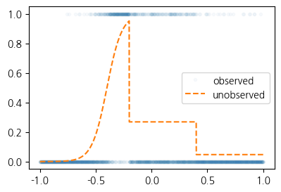
net2 = torch.nn.Sequential(
torch.nn.Linear(1,512),
torch.nn.ReLU())net = torch.nn.Sequential(
torch.nn.Linear(1,512),
torch.nn.ReLU(),
torch.nn.Linear(512,1),
torch.nn.Sigmoid()
)
loss_fn = torch.nn.BCELoss()
optimizr = torch.optim.Adam(net.parameters())
#---#
for epoc in range(5000):
## 1
yhat = net(x)
## 2
loss = loss_fn(yhat,y)
## 3
loss.backward()
## 4
optimizr.step()
optimizr.zero_grad()plt.plot(x,y,'.',alpha=0.03, label="observed")
plt.plot(x,v, label="true")
plt.plot(x,net(x).data,'--', label="estimated")
plt.legend()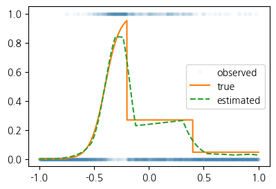
B. 곡선은 표현 가능한가?
- 2024년 수능 미적30번 문제에 나온 곡선
\[y_i = e^{-x_i} \times |\cos(5x_i)| \times \sin(5x) + \epsilon_i, \quad \epsilon_i \sim N(0,\sigma^2)\]
torch.manual_seed(43052)
x = torch.linspace(0,2,2000).reshape(-1,1)
eps = torch.randn(2000).reshape(-1,1)*0.05
fx = torch.exp(-1*x)* torch.abs(torch.cos(3*x))*(torch.sin(3*x))
y = fx + epsplt.plot(x,y,label="observed",alpha=0.5)
plt.plot(x,fx,label="true")_files/figure-html/cell-10-output-1.png)
net = torch.nn.Sequential(
torch.nn.Linear(1,2048), # 꺽이지않은 1024개의 직선
torch.nn.ReLU(), # 꺽인(렐루된) 1024개의 직선
torch.nn.Linear(2048,1), # 합쳐진 하나의 꺽인 직선
)
loss_fn = torch.nn.MSELoss()
optimizr = torch.optim.Adam(net.parameters())
##
for epoc in range(1000):
## 1
yhat = net(x)
## 2
loss = loss_fn(yhat,y)
## 3
loss.backward()
## 4
optimizr.step()
optimizr.zero_grad()plt.plot(x,y,label="observed",alpha=0.5)
plt.plot(x,fx,label="true")
plt.plot(x,net(x).data,'--',label="estimated")
plt.legend()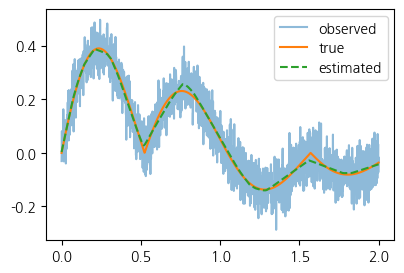
3. 시벤코 정리
A. 시벤코 정리의 소개
하나의 은닉층을 가지는 아래와 같은 꼴의 네트워크 \(net: {\bf X}_{n \times p} \to {\bf y}_{n\times q}\)는
net = torch.nn.Sequential( torch.nn.Linear(p,???), torch.nn.Sigmoid(), torch.nn.Linear(???,q) )모든 보렐 가측함수 (Borel measurable function)
\[f: {\bf X}_{n \times p} \to {\bf y}_{n\times q}\]
를 원하는 정확도로 “근사”시킬 수 있다. 쉽게 말하면 \({\bf X} \to {\bf y}\) 인 어떠한 복잡한 규칙라도 하나의 은닉층을 가진 신경망이 원하는 정확도로 근사시킨다는 의미이다. 예를들면 아래와 같은 문제를 해결할 수 있다.
- \({\bf X}_{n\times 2}\)는 토익점수, GPA 이고 \({\bf y}_{n\times 1}\)는 취업여부일 경우 \({\bf X} \to {\bf y}\)인 규칙을 신경망은 항상 찾을 수 있다.
- \({\bf X}_{n \times p}\)는 주택이미지, 지역정보, 주택면적, 주택에 대한 설명 이고 \({\bf y}_{n\times 1}\)는 주택가격일 경우 \({\bf X} \to {\bf y}\)인 규칙을 신경망은 항상 찾을 수 있다.
즉 하나의 은닉층을 가진 신경망의 표현력은 거의 무한대라 볼 수 있다.
보렐가측함수에 대한 정의는 측도론에 대한 이해가 있어야 가능함. 측도론에 대한 내용이 궁금하다면 https://guebin.github.io/SS2024/ 을 공부해보세요
B. 시벤코정리가 가능한 이유
- 준비
x = torch.linspace(-10,10,200).reshape(-1,1)
net = torch.nn.Sequential(
torch.nn.Linear(in_features=1,out_features=2),
torch.nn.Sigmoid(),
torch.nn.Linear(in_features=2,out_features=1)
)
l1,a1,l2 = netnetSequential(
(0): Linear(in_features=1, out_features=2, bias=True)
(1): Sigmoid()
(2): Linear(in_features=2, out_features=1, bias=True)
)- 생각1 : 2개의 시그모이드를 우연히 잘 조합하면 하나의 계단함수를 만들 수 있다
l1.weight.data = torch.tensor([[-5.00],[5.00]])
l1.bias.data = torch.tensor([+10.00,+10.00])l2.weight.data = torch.tensor([[1.00,1.00]])
l2.bias.data = torch.tensor([-1.00])fig,ax = plt.subplots(1,3,figsize=(9,3))
ax[0].plot(x,l1(x)[:,[0]].data,label=r"$-5x+10$")
ax[0].plot(x,l1(x)[:,[1]].data,label=r"$5x+10$")
ax[0].set_title('$l_1(x)$')
ax[0].legend()
ax[1].plot(x,a1(l1(x))[:,[0]].data,label=r"$v_1=sig(-5x+10)$")
ax[1].plot(x,a1(l1(x))[:,[1]].data,label=r"$v_2=sig(5x+10)$")
ax[1].set_title('$(a_1 \circ l_1)(x)$')
ax[1].legend()
ax[2].plot(x,l2(a1(l1(x))).data,color='C2',label=r"$v_1+v_2-1$")
ax[2].set_title('$(l_2 \circ a_1 \circ \l_1)(x)$')
ax[2].legend()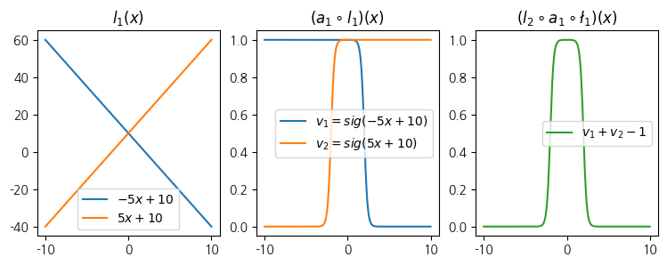
- 생각2 : 계단함수의 모양이 꼭 생각 1과 같을 필요는 없다. 중심은 이동가능하고, 높이도 조절가능하다.
- 예시1
l1.weight.data = torch.tensor([[-5.00],[5.00]])
l1.bias.data = torch.tensor([+0.00,+20.00])
l2.weight.data = torch.tensor([[1.00,1.00]])
l2.bias.data = torch.tensor([-1.00])
fig,ax = plt.subplots(1,3,figsize=(9,3))
ax[0].plot(x,l1(x).data.numpy(),'--',color='C0'); ax[0].set_title('$l_1(x)$')
ax[1].plot(x,a1(l1(x)).data.numpy(),'--',color='C0'); ax[1].set_title('$(a_1 \circ l_1)(x)$')
ax[2].plot(x,l2(a1(l1(x))).data,'--',color='C0'); ax[2].set_title('$(l_2 \circ a_1 \circ \l_1)(x)$');
ax[2].set_ylim(-0.1,2.6)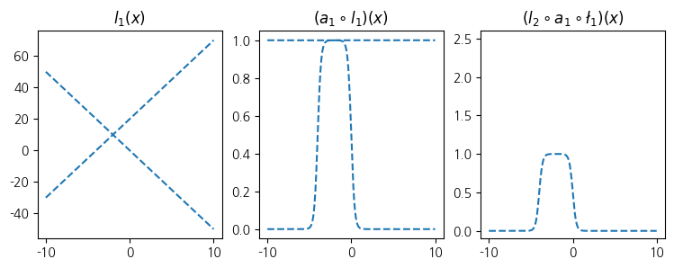
- 예시2
l1.weight.data = torch.tensor([[-5.00],[5.00]])
l1.bias.data = torch.tensor([+20.00,+00.00])
l2.weight.data = torch.tensor([[2.50,2.50]])
l2.bias.data = torch.tensor([-2.50])
fig,ax = plt.subplots(1,3,figsize=(9,3))
ax[0].plot(x,l1(x).data.numpy(),'--',color='C1'); ax[0].set_title('$l_1(x)$')
ax[1].plot(x,a1(l1(x)).data.numpy(),'--',color='C1'); ax[1].set_title('$(a_1 \circ l_1)(x)$')
ax[2].plot(x,l2(a1(l1(x))).data,'--',color='C1'); ax[2].set_title('$(l_2 \circ a_1 \circ \l_1)(x)$');
ax[2].set_ylim(-0.1,2.6)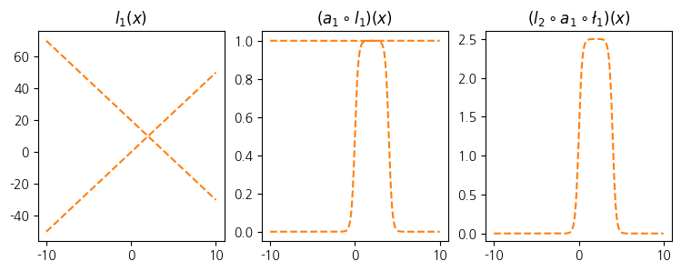
- 생각3 : out_features=4로 하고 가중치를 적당히 하면 \((l_2\circ a_1 \circ l_1)(x)\)의 결과로 생각2의 예시1,2를 조합한 형태도 가능할 것 같다. 즉 4개의 시그모이드를 잘 조합하면 2단계 계단함수를 만들 수 있다.
l1 = torch.nn.Linear(in_features=1,out_features=4)
a1 = torch.nn.Sigmoid()
l2 = torch.nn.Linear(in_features=4,out_features=1)l1.weight.data = torch.tensor([[-5.00],[5.00],[-5.00],[5.00]])
l1.bias.data = torch.tensor([0.00, 20.00, 20.00, 0])
l2.weight.data = torch.tensor([[1.00, 1.00, 2.50, 2.50]])
l2.bias.data = torch.tensor([-1.0-2.5])plt.plot(l2(a1(l1(x))).data,'--')
plt.title(r"$(l_2 \circ a_1 \circ l_1)(x)$")Text(0.5, 1.0, '$(l_2 \\circ a_1 \\circ l_1)(x)$')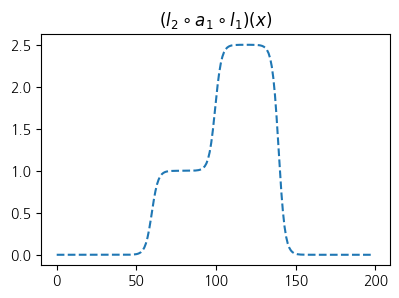
- 일단 2단계 계단함수라고 부르기
- 생각4 : 2m개의 시그모이드를 우연히 잘 조합하면 m단계 계단함수를 만들 수 있다
- 정리1 : 2개의 시그모이드를 우연히 잘 결합하면 아래외같은 ‘1단계-계단함수’ h를 만들 수 있음
def h(x):
sig = torch.nn.Sigmoid()
v1 = -sig(200*(x-0.5))
v2 = sig(200*(x+0.5))
return v1+v2 plt.plot(x,h(x))
plt.title("$h(x)$")Text(0.5, 1.0, '$h(x)$')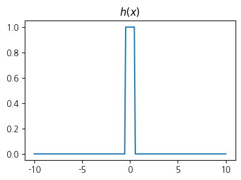
- 정리2: 위와 같은 함수 \(h\)를 이용한 아래의 네트워크를 고려하자. 이는 “m단계-계단함수”를 만든다.
\[\underset{(n,1)}{\bf X} \overset{l_1}{\to} \underset{(n,m)}{\boldsymbol u^{(1)}} \overset{h}{\to} \underset{(n,m)}{\boldsymbol v^{(1)}} \overset{l_2}{\to} \underset{(n,1)}{\hat{\boldsymbol y}}\]
그리고 위의 네트워크와 동일한 효과를 주는 아래의 네트워크가 항상 존재
\[\underset{(n,1)}{\bf X} \overset{l_1}{\to} \underset{(n,2m)}{\boldsymbol u^{(1)}} \overset{sig}{\to} \underset{(n,2m)}{\boldsymbol v^{(1)}} \overset{l_2}{\to} \underset{(n,1)}{\hat{\boldsymbol y}}\]
- 생각5 그런데 어지간한 함수형태는 구불구불한 “m단계-계단함수”로 다 근사할 수 있지 않을까?
아래의 네트워크에서 (1) ?? 를 충분히 키우고 (2) 적절하게 학습만 잘 된다면
net = torch.nn.Sequential(
torch.nn.Linear(p,???),
torch.nn.Sigmoid(),
torch.nn.Linear(???,q)
)위의 네트워크는 거의 무한한 표현력을 가진다. –> 이런식으로 증명가능
C. \(h\)의 위력
- 소망: 아래와 같이 net을 설계해서, 그 위력을 체감해보고 싶은데..
net = torch.nn.Sequential(
torch.nn.Linear(1,??),
torch.nn.H(),
torch.nn.Linear(??,1)
)- \(h(x)\)를 생성하는 클래스를 만들어보자.
class H(torch.nn.Module):
def __init__(self):
super().__init__()
def forward(self,x):
def h(x):
sig = torch.nn.Sigmoid()
v1 = -sig(200*(x-0.5))
v2 = sig(200*(x+0.5))
return v1+v2
out = h(x)
return out h = H()- h를 이용해보자
- 예제1 : 스펙의 역설
df = pd.read_csv("https://raw.githubusercontent.com/guebin/DL2025/main/posts/ironyofspec.csv")
x = torch.tensor(df.x).float().reshape(-1,1)
y = torch.tensor(df.y).float().reshape(-1,1)
prob = torch.tensor(df.prob).float().reshape(-1,1)net = torch.nn.Sequential(
torch.nn.Linear(1,2048),
H(),
torch.nn.Linear(2048,1),
torch.nn.Sigmoid()
)
loss_fn = torch.nn.BCELoss()
optimizr = torch.optim.Adam(net.parameters())
#---#
for epoc in range(200):
## 1
yhat = net(x)
## 2
loss = loss_fn(yhat,y)
## 3
loss.backward()
## 4
optimizr.step()
optimizr.zero_grad()plt.plot(x,prob)
plt.plot(x,net(x).data,'--')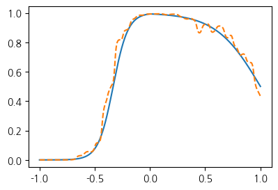
- 예제2 : 수능곡선
torch.manual_seed(43052)
x = torch.linspace(0,2,2000).reshape(-1,1)
eps = torch.randn(2000).reshape(-1,1)*0.05
fx = torch.exp(-1*x)* torch.abs(torch.cos(3*x))*(torch.sin(3*x))
y = fx + epsplt.plot(x,y,alpha=0.5)
plt.plot(x,fx)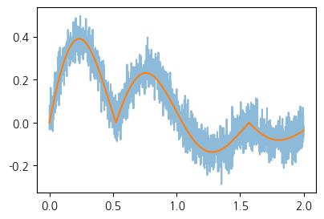
net = torch.nn.Sequential(
torch.nn.Linear(1,2048),
H(),
torch.nn.Linear(2048,1)
)
loss_fn = torch.nn.MSELoss()
optimizr = torch.optim.Adam(net.parameters())
#---#
for epoc in range(200):
## 1
yhat = net(x)
## 2
loss = loss_fn(yhat,y)
## 3
loss.backward()
## 4
optimizr.step()
optimizr.zero_grad()plt.plot(x,y,alpha=0.5)
plt.plot(x,fx)
plt.plot(x,net(x).data,'--')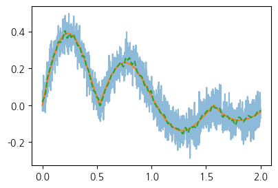
D.의문점
- 그냥 활성함수 h로 쓰면 되는거 아닌가? 왜 relu를 쓰지?
- 왜 딥러닝이 2010년 이후에 떴지?
- 은닉층이 깊을 수록 좋은거 아닌가?
5. MNIST 해결
A. 예비학습 - plt.imshow()
- plt.imshow(...,camp='gray') 에서 ...이 shape가 (??,??)이면 흑백이미지를 출력
img = torch.tensor([[255,100],
[255,0]])
plt.imshow(img,cmap="gray")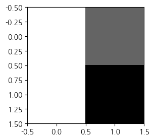
- plt.imshow(...) 에서 ...의 shape이 (??,??,3)이면 칼라이미지를 출력
r = torch.tensor([[255,0],
[255,0]])
g = torch.tensor([[0,255],
[0,0]])
b = torch.tensor([[0,0],
[0,255]])
img = torch.stack([r,g,b],axis=-1)
plt.imshow(img)_files/figure-html/cell-35-output-1.png)
- plt.imshow(...) 에서 ...의 자료형이 int인지 float인지에 따라서 인식이 다름
r = torch.tensor([[1,0],
[1,0]])
g = torch.tensor([[0,1],
[0,0]])
b = torch.tensor([[0,0],
[0,1]])
img = torch.stack([r,g,b],axis=-1)
plt.imshow(img)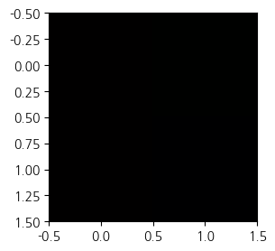
r = torch.tensor([[255,0],
[255,0]])/255
g = torch.tensor([[0,255],
[0,0]])/255
b = torch.tensor([[0,0],
[0,255]])/255
img = torch.stack([r,g,b],axis=-1)
plt.imshow(img)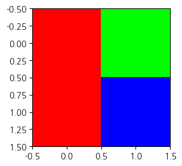
- 자료형이 float임
imgtensor([[[1., 0., 0.],
[0., 1., 0.]],
[[1., 0., 0.],
[0., 0., 1.]]])B. 데이터
- 데이터 정리코드
train_dataset = torchvision.datasets.MNIST(root='./data', train=True, download=True)
to_tensor = torchvision.transforms.ToTensor()
X3 = torch.stack([to_tensor(Xi) for Xi, yi in train_dataset if yi==3])
X7 = torch.stack([to_tensor(Xi) for Xi, yi in train_dataset if yi==7])
X = torch.concat([X3,X7],axis=0)
y = torch.tensor([0.0]*len(X3) + [1.0]*len(X7))Downloading http://yann.lecun.com/exdb/mnist/train-images-idx3-ubyte.gz
Failed to download (trying next):
HTTP Error 404: Not Found
Downloading https://ossci-datasets.s3.amazonaws.com/mnist/train-images-idx3-ubyte.gz
Downloading https://ossci-datasets.s3.amazonaws.com/mnist/train-images-idx3-ubyte.gz to ./data/MNIST/raw/train-images-idx3-ubyte.gz100%|████████████████████████████████████████████████████████████████████| 9912422/9912422 [00:03<00:00, 3058648.55it/s]Extracting ./data/MNIST/raw/train-images-idx3-ubyte.gz to ./data/MNIST/raw
Downloading http://yann.lecun.com/exdb/mnist/train-labels-idx1-ubyte.gz
Failed to download (trying next):
HTTP Error 404: Not Found
Downloading https://ossci-datasets.s3.amazonaws.com/mnist/train-labels-idx1-ubyte.gz
Downloading https://ossci-datasets.s3.amazonaws.com/mnist/train-labels-idx1-ubyte.gz to ./data/MNIST/raw/train-labels-idx1-ubyte.gz100%|█████████████████████████████████████████████████████████████████████████| 28881/28881 [00:00<00:00, 147469.10it/s]Extracting ./data/MNIST/raw/train-labels-idx1-ubyte.gz to ./data/MNIST/raw
Downloading http://yann.lecun.com/exdb/mnist/t10k-images-idx3-ubyte.gz
Failed to download (trying next):
HTTP Error 404: Not Found
Downloading https://ossci-datasets.s3.amazonaws.com/mnist/t10k-images-idx3-ubyte.gz
Downloading https://ossci-datasets.s3.amazonaws.com/mnist/t10k-images-idx3-ubyte.gz to ./data/MNIST/raw/t10k-images-idx3-ubyte.gz100%|████████████████████████████████████████████████████████████████████| 1648877/1648877 [00:01<00:00, 1479955.21it/s]Extracting ./data/MNIST/raw/t10k-images-idx3-ubyte.gz to ./data/MNIST/raw
Downloading http://yann.lecun.com/exdb/mnist/t10k-labels-idx1-ubyte.gz
Failed to download (trying next):
HTTP Error 404: Not Found
Downloading https://ossci-datasets.s3.amazonaws.com/mnist/t10k-labels-idx1-ubyte.gz
Downloading https://ossci-datasets.s3.amazonaws.com/mnist/t10k-labels-idx1-ubyte.gz to ./data/MNIST/raw/t10k-labels-idx1-ubyte.gz100%|██████████████████████████████████████████████████████████████████████████| 4542/4542 [00:00<00:00, 3940945.13it/s]Extracting ./data/MNIST/raw/t10k-labels-idx1-ubyte.gz to ./data/MNIST/raw
plt.plot(y,'.')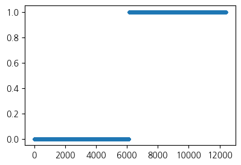
plt.imshow(X[0][0], cmap='gray')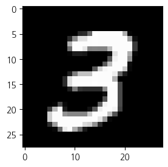
plt.imshow(X[-2].reshape(28,28),cmap='gray')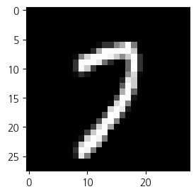
- 우리는 \({\bf X}: (n,1,28,28)\) 에서 \({\bf y}: (n,1)\)으로 가는 맵핑을 배우고 싶음. \(\to\) 이런건 배운적이 없는데?.. \(\to\) 그렇다면 \({\bf X}:(n,784) \to {\bf y}:(n,1)\) 으로 가는 맵핑을 학습하자.
#X[0].reshape(-1)X = torch.stack([img.reshape(-1) for img in X])
y = y.reshape(-1,1)X.shape,y.shape(torch.Size([12396, 784]), torch.Size([12396, 1]))C. 학습
net = torch.nn.Sequential(
torch.nn.Linear(784,32),
torch.nn.ReLU(),
torch.nn.Linear(32,1),
torch.nn.Sigmoid()
)
loss_fn = torch.nn.BCELoss()
optimizr = torch.optim.Adam(net.parameters())
#---#
for epoc in range(200):
## 1
yhat = net(X)
## 2
loss = loss_fn(yhat,y)
## 3
loss.backward()
## 4
optimizr.step()
optimizr.zero_grad()plt.plot(y,'.')
plt.plot(net(X).data,'.',alpha=0.2)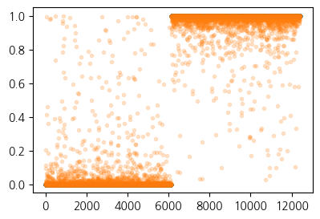
((y == (net(X).data > 0.5))*1.0).mean()tensor(0.9901)